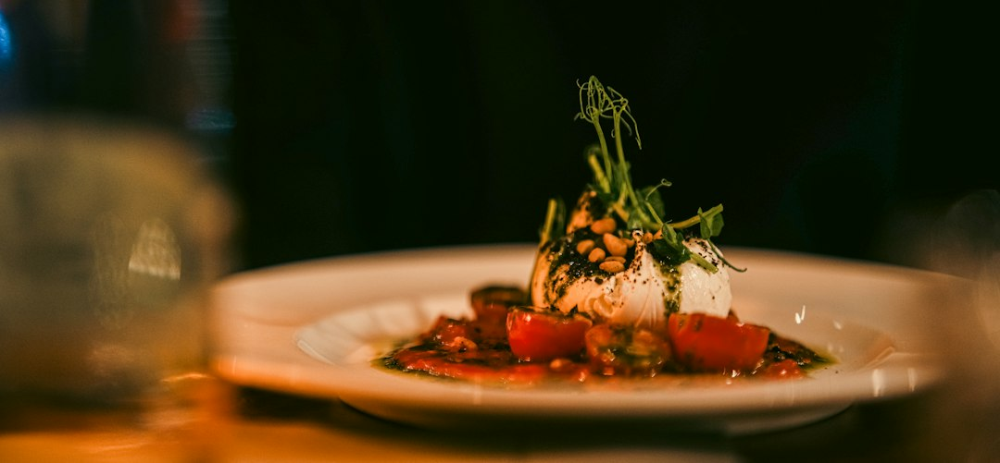

Automazione nel Food Service: Come Locanda Digitale Elimina il Divario Competitivo per Ristoratori e Chef

Automazione e Digitalizzazione per Ristoratori, Chef e Titolari: Superare il Divario Competitivo con Locanda Digitale
- Il menu cartaceo tradizionale non soddisfa più esigenze di comunicazione moderne e viene ignorato dai clienti.
- Costi elevati e complessità nella produzione di contenuti video professionali limitano la promozione della qualità dei piatti sui social.
- Locanda Digitale, grazie alla sua suite AI integrata, offre un’alternativa semplice e conveniente che digitalizza il menù e crea video 3D verticali accattivanti.
Analisi approfondita della notizia e delle implicazioni operative
Il settore della ristorazione sta vivendo una trasformazione digitale sempre più accelerata, ma molti professionisti continuano a utilizzare menu tradizionali esclusivamente cartacei e di solo testo. Questa modalità, un tempo sufficiente, oggi non riesce più a coinvolgere il pubblico, specialmente le nuove generazioni di clienti abituate a un consumo rapido e visuale di contenuti su smartphone e social network.
La mancanza di supporti digitali dinamici impatta negativamente sull’esperienza del cliente fin dal primo contatto con il locale, riducendo significativamente l’efficacia della comunicazione del valore e della qualità dei piatti offerti. I ristoratori che non aggiornano questo aspetto operativo si trovano in svantaggio competitivo rispetto a chi investe in soluzioni di automazione e digital marketing avanzato.
Il gap digitale si traduce quindi non solo in una perdita di appeal immediato ma anche in una più difficile fidelizzazione della clientela e in difficoltà nel valorizzare le materie prime e le abilità dello chef attraverso narrazioni visive accattivanti.
Le conseguenze e i costi di non agire
Continuare a fare affidamento esclusivamente su menu cartacei di solo testo significa esporsi a molte disconnessioni con la domanda attuale del mercato:
- Ignorare il menu: i clienti moderni tendono a trascurare testi lunghi e poco coinvolgenti, prediligendo un’esperienza visiva ricca e immediata.
- Comunicazione inefficace sui social: senza contenuti video e fotografici di alta qualità, la presenza online risulta piatta e incapace di generare interesse e passaparola.
- Costi proibitivi per video professionali: avvalersi di videomaker esterni è oneroso e poco sostenibile per molte realtà, soprattutto piccole trattorie, pizzerie gourmet e agriturismi.
Questi fattori combinati comportano una perdita di fatturato e un rallentamento del processo di innovazione, compromettendo la crescita e la competitività sul mercato locale e digitale, cruciali per la sopravvivenza nell’era post-pandemica.
Come Locanda Digitale risolve il problema
Locanda Digitale di RM Studio offre una suite AI progettata specificamente per la ristorazione, capace di automatizzare e rivoluzionare la comunicazione visiva e la gestione del menu:
- Spot video 3D verticali (9:16) a 60 FPS: partendo dalla semplice fotografia reale del piatto, la suite crea video dinamici e di grande impatto per i social, senza necessità di filmare professionalmente. Questo consente di mostrare ogni dettaglio con fluidità e modernità.
- Digitalizzazione completa del menu cartaceo: trasformazione del menu statico in digitale, con fotografie HD e QR Code ai tavoli. I clienti possono consultare facilmente e immediatamente un menu visivo, ricco di immagini e dettagli, migliorando l’esperienza d’acquisto.
- Soluzione economica e senza abbonamento: con Social 3D Starter a €79 e Visual Menu Pro a €149, Locanda Digitale è accessibile senza costi ricorrenti, eliminando le barriere di ingresso per tutte le dimensioni di impresa.
Questa soluzione si inserisce perfettamente nel contesto di un mercato sempre più esigente, colmando il gap tecnologico senza richiedere competenze specifiche o risorse eccessive, permettendo ai professionisti di concentrarsi sull’eccellenza gastronomica mentre l’automazione si occupa della comunicazione e del marketing digitale.
| Gestione Tradizionale | Con Locanda Digitale |
|---|---|
| Menu cartaceo statico, solo testo | Menu digitale con fotografie HD integrato via QR Code |
| Comunicazione visiva minima o assente | Spot video 3D verticali a 60 FPS da foto reali |
| Costi elevati per produzione video esterna | Soluzione AI economica e senza abbonamenti |
| Difficoltà a promuovere l’autenticità e qualità | Maggiore engagement e storytelling visivo potente |
💡 Ti è stato utile questo approfondimento?
Condividilo con un collega o un amico del settore Ristoratori, Chef, Titolari di Trattorie, Pizzerie Gourmet e Agriturismi a cui potrebbe interessare!
FAQ - Domande frequenti per i professionisti della ristorazione
1. Locanda Digitale richiede competenze tecniche specifiche per l’utilizzo?
Assolutamente no. La piattaforma è concepita per essere user-friendly e guidare l’utente passo dopo passo, consentendo di ottenere contenuti professionali senza esperienze pregresse in video editing o design.
2. Posso aggiornare in autonomia il menu digitale e i video dei piatti?
Sì, una delle peculiarità di Locanda Digitale è la facilità d’aggiornamento. Basterà caricare nuove foto o modificare il menu e il sistema aggiornerà automaticamente i contenuti visivi e digitali associati.
3. Qual è il vantaggio competitivo principale rispetto a soluzioni simili?
Locanda Digitale coniuga un costo contenuto e assenza di abbonamenti con elevate prestazioni di automazione AI, specificamente sviluppata per il food service, rendendo davvero accessibile e scalabile il digital marketing visivo.
Inizia Subito
Social 3D Starter a €79 una tantum o Visual Menu Pro a €149. Nessun abbonamento.
Fonti Ufficiali e Risorse Esterne
Scopri l'Intelligenza Artificiale per la tua attività
Ottimizza i processi e aumenta le vendite con le soluzioni B2B di RM Studio.
Scopri Locanda Digitale